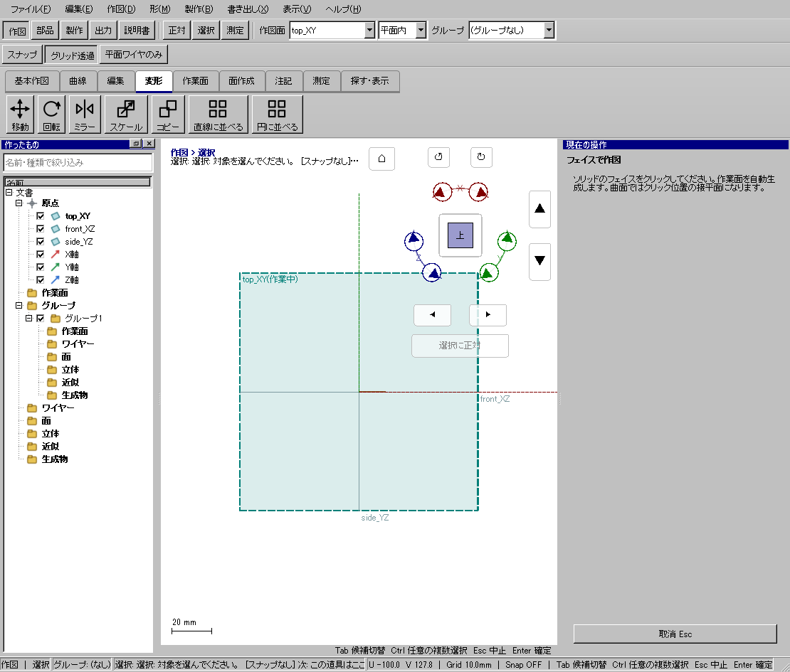
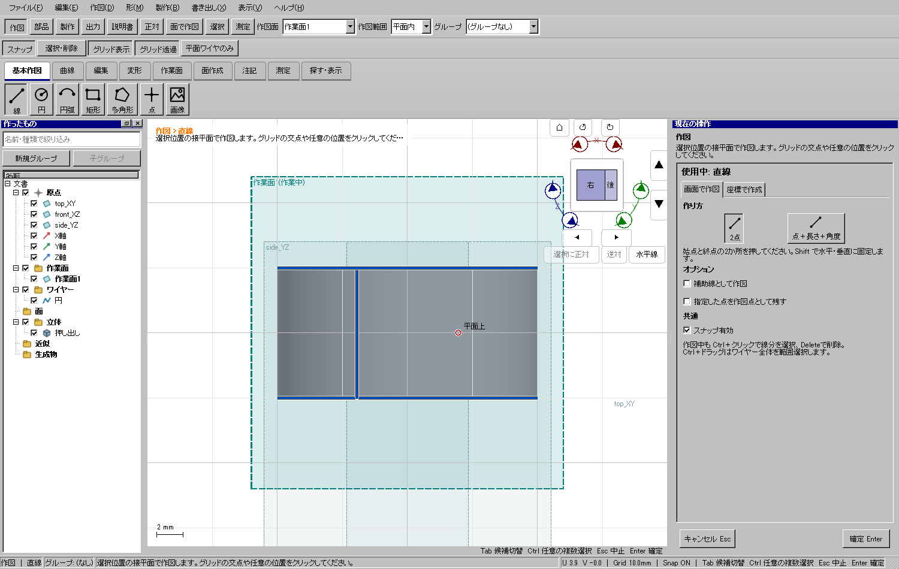
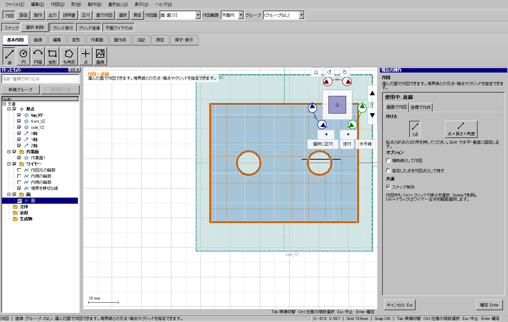
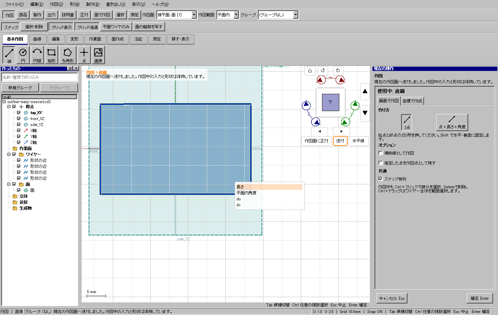

部品の上面で穴位置を描く
使う機能：面で作図
面作成ツールで作った面やソリッドの表面を選び、グリッドとスナップを使って作図します。曲面を選ぶと、その位置の接平面で作図します。
上面を直接作図面として使い、その境界との交点から作図できる。
1 準備 — 元の図形から作る
20×10×5mmの箱を作る。
まだ用意できていなければ、次の手順を先に行ってください。既にモデルがある場合も、例の座標・大きさ・面の向きを自分のモデルへ読み替えます。
- 20×10×10mmの箱を作る — 図形の作成から順に練習できます。
- 線・面・部品を取り違えずに選ぶ — 図形の作成から順に練習できます。
練習前にKCD2を別名保存します。数値の長さはmm、角度は度です。平面内のu/vと世界XYZを区別します。
2 使う道具を開く — 押す場所
- 上の帯の「面で作図」、作図 → 作業面 → 面で作図、または部品 → 面編集 → 面で作図
別の入口：Ctrl+K → 面で作図を検索 → 候補の用途を確認して開きます。別モードなら「全モードから探す」をオンにします。

3 操作手順 — 一つずつ進める
1 面で作図を選ぶ
この段階で確認：この操作で使う入力：20×10×5mmの箱を作る
2 箱の平らな上面を押す
この段階で確認：使う対象・値：この例は平らなフェイス。曲面では選択位置の接平面
3 上面に正対して半径2mmの円を描く
この段階で確認：上面を直接作図面として使い、その境界との交点から作図できる。
4 設定する欄と数値
ボタン名・欄名と、今回使う値を対応させてください。項目が出ていない場合は作り方・モードが合っているか確認し、ペイン内をスクロールします。
| 見る欄・役割 | この例の設定と意味 |
|---|---|
| 対象 | 箱の平らな上面 |
| 次の操作 | 正対して円を描く |
選択の確認：役割欄の名前と3Dの強調を照合します。重なって拾いにくい時はTabで候補を替えます。全体を使う例では左一覧の要素名を選び、3Dの1辺選択と区別します。

この実画面は既存操作試験の一場面で、下の数値例の完成画像とは限りません。設定・選択の操作画面。具体的な完成例は段階写真のある作業例を参照してください。
5 確定して結果を確認
必要な入力と数値をそろえ、下見と状態欄を確認して、右ペインの作成・適用・確定ボタンを押します。Enter対応の道具はEnterでも確定できます。
上面を直接作図面として使い、その境界との交点から作図できる。
形を作る操作では、元と結果の名前を分けて一覧で確認し、必要に応じて元を一時非表示にします。表示だけの機能では形状や要素数を変えることが目的ではありません。
6 取消・やり直し・保存
Escで未確定の入力を取り消します。道具を終えるには選択（V）か別の道具へ切り替えます。確定済みの図面変更はCtrl+Z、やり直しはCtrl+Yです。
モデルの編集正本はKCD2、説明書の編集正本はKCIです。外部へ出力するだけの機能では、出力ファイルと編集元を両方残してください。
進めない場合 — 症状から戻る場所を探す
| 起きていること | 確認して直す場所 |
|---|---|
| 曲面全体に沿わせたい | 接平面への作図後、面へ投影を使う |
| 違う面が候補 | ホバー強調とTabで選び分け |
この機能の入力条件：フェイスを直接作図面にします。作業平面は追加しません。曲面では選択位置の接平面です。
計算中は処理表示を見ます。失敗が出たら、対象・入力条件を変えずに何度も押すのでなく、案内にある対象と条件を確認します。
参考画面の出典と確認範囲
試験名：HP-FA-01 フェイスから作図と近似。試験全体の結果：passed。画像はコマンド呼出し直後で、入力待ち・下見の場合もあります。各段階の完成証拠ではありません。
コピーせず、面を作った元の線を編集する
- 「面で作図」で対象の面を押します。平面ならその平面、曲面なら押した位置の接平面が作図面になります。
- 左一覧で元の面を選び、右クリック →「元の輪郭の線を表示して選ぶ」を押します。「選択」メニューからも使えます。面生成に使った境界と穴の元線を選び、コピーは作りません。作図途中の点も残ります。
- オフセットなどの編集へ進みます。現在の作図面内に結果を作りたい場合は、オフセットの「加工平面」で「現在の作図面へ投影して加工」を選び、下見を確認して確定します。
面だけを局所表示していても、参照元の線だけが追加表示されます。無関係な線や非表示グループは表示しません。「平面ワイヤのみ」で元線が作図面の外にある場合は、その表示を解除してから選び直します。部分区間を使った面では、元セグメント全体を選びます。
元線が同じ平面上にない場合、接平面を指定しても元線は移動しません。四辺が直線でも四頂点が共面でなければ平面にはなりません。平面の面を作るときは、同じ作図面内で輪郭を組み立ててください。
普通の面と重なる面を指定する
- 上の帯の「面で作図」を押します。
- 3Dビューで面を指します。重なっている線を避けて面が強調されます。目的の面が奥にあるときはTabで候補を切り替えます。
- 面をクリックするとグリッドが表示され、直線の作図を始められます。円や矩形はそのまま道具を切り替えて描けます。
面を先に選んでから「面で作図」を押すこともできます。単一面の形状ガイドは左一覧からも指定できます。面が複数あるソリッド全体を一覧で選んだ場合は、3Dビューで使う面を指定します。Escで面の指定を取り消せます。
作業平面を別に作らず、選んだ面を作図面として使います。上部の「作図面」から元の平面へ戻したり、「3Dビューで面を指定…」から別の面を指定できます。平面ワイヤのみ表示でも作図する面の境界を残すので、他の線との交点に吸着して作図できます。角度、間隔、原点は通常のグリッド設定で変更できます。



元の輪郭ワイヤを直接使って作図・編集する
- 3Dビューまたは左一覧から面を指定し、「面で作図」を押します。平面はその面、曲面は指定位置の接平面が現在の作図面です。
- 上の「正対」で現在の作図面を正面から見ます。何も選んでいないときはビュー右上の「作図面に正対」「逆対」も使えます。「水平線」は画面上の2点で指定でき、1点目からカーソルまでガイド線が出ます。
- グリッドの表示・間隔・角度・原点と、通常の線・円・曲線の作図を使います。面作成に使った元ワイヤをそのまま選べます。輪郭コピーや別の作業面を作る準備は不要です。
- 「編集 → オフセット」を開き、元ワイヤを3Dビューまたは左一覧から選びます。距離と「現在の作図面へ投影して加工」を確認し、下見して確定します。平面作図ではこれが既定です。結果は現在の作図面上に生成し、元の面・ワイヤは移動しません。
- 新しい線と作図面上の輪郭との実交点を使って作図します。C面取り・R丸めでは加工する2つの線を続けて選びます。届いていない直線は延長上の交点を使います。
- 必要な輪郭を閉じ、「面にする」で面を作ります。内側の閉輪郭は穴として選べます。曲面上に仕上げる場合は、編集した輪郭を「面へ投影」で元の面へ戻します。
曲面と接平面は別の形状です。元ワイヤが接平面の外にある場合も、オフセットの結果を現在の作図面上へ作れます。平面への移動量と、円弧が楕円になるなど曲線近似が必要なときの偏差上限・標本RMSを下見に表示します。元の3D形状は保持します。実3Dで交わらない元線同士を実交点とは扱いません。


面の境界だけがあり、元のワイヤがない場合
「面の輪郭を写す」で編集用の線を作れます。既定は元の3D位置・形を保持します。「現在の作図面へ投影する」は必要な場合に選び、動く距離を確認してください。コピーは必須の前処理ではありません。
平面と接平面を確認する
四辺がすべて直線でも、四隅が同じ平面上にない四辺面は曲面になります。平面を決めるには、3点で決まる平面へ4点目も載る必要があります。
「面で作図」で曲面を指定した場合、作図面名は「接平面: …」になります。元の面を左一覧で非表示にしても、この作図面の位置・向きは維持します。オフセットの「結果の作図面」欄で対象名を確認してください。線はその平面上に作られ、元の曲面上へ沿わせる仕上げには「面へ投影」を使います。曲面そのものを平らにする操作ではありません。
四隅がずれた輪郭から平らな面を作る
- 「作業面」の「3点を通る」で、基準にしたい3点から平面を決め、「作ったら作業中にする」をオンにして確定します。隣の面との共通辺を保つ場合は、その辺の両端と、もう1点を選びます。
- 「面へ投影」で元の外形線を選び、投影先の種類を「作業面」にして、新しい作業面を指定します。「3Dワイヤーを面に載せる（最近点）」「通常ワイヤー（編集可能）」「ワイヤーのみ」で下見を確認して確定します。
- 投影した線だけを「面にする」で選び、平面の候補を確定します。この面で「面で作図」を使えば、元の面と作図面を一致させてオフセットできます。
平面から離れた点は、投影によって位置が変わります。元の4点すべてを保ったまま平面にすることはできません。「四辺面」の「平坦優先」は、元の辺を平面へ矯正する設定ではありません。